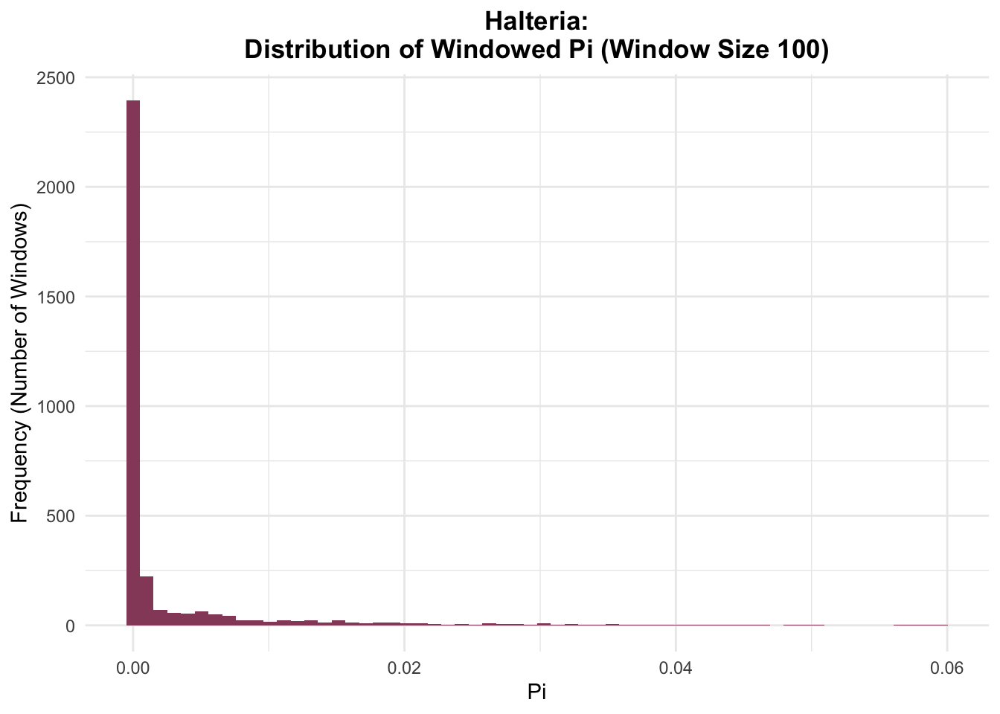
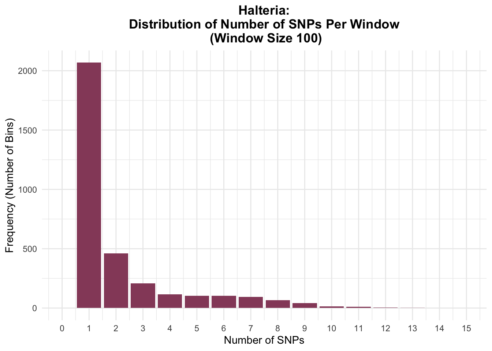

Vcftools Tutorial
Nucleotide diversity is a measure of genetic variation. It can be used to look at the variation within a population as well as the divergence between populations.
Nucleotide diversity is denoted by π. It is defined as the number of nucleotide differences per site between two randomly selected sequences in a population.
For 2 alleles, the nucleotide diversity is equal to the proportion of different nucleotides times the frequency of each allele in the population. For example, if half the individuals are homozygous G for a variant site while the other half of the individuals are homozygous T, the nucleotide diversity for that site would be ¼ , since 1 * ½ * ½ = ¼ . For more than 2 alleles, nucleotide diversity is equal to the sum of (Freq allele 1) * (freq allele 2) * (nucleotide diversity of the pair) for all pairwise comparisons.
We can calculate nucleotide diversity with Vcftools. This can be done per variant site, or in windows. We’ll start with the per variant site option.
In the terminal, once you have vcftools installed, you can navigate to the directory where your vcf file is and run a command similar to the following. This produces a tab delimited fite with the suffix ‘.sites.pi’.
#run in the command line
vcftools --vcf input_file_name --site-pi --out output_file_name
Once we have the files with the per variant site pi values, we can read them into R.
library(tidyverse)
library(vcfR)
halt_pi_90 <- read_tsv("./Data/halteria/halt_pi_90")
chilo_pi_90 <- read_tsv("./Data/chilo/chilo_pi_90")
halt_color = "#964b69"
chilo_color = "#1ea8d6"
chilo_90 <- read.vcfR("./Data/chilo/all_filtered_chilo_90.vcf")
halt_90 <- read.vcfR("./Data/halteria/all_filtered_halt_90.vcf")Now we can look at the distribution of per variant site pi values for Halteria and Chilodonella.
halt_pi_90 %>%
ggplot(aes(x = PI)) +
geom_histogram(fill = halt_color) +
theme_minimal() +
labs(x = "Pi", y = "Frequency (Number of Polymorphisms)",
title = "Halteria Nucleotide Diversity Distribution (MINID90)") +
theme(plot.title = element_text(face = "bold", hjust = .5))chilo_pi_90 %>%
ggplot(aes(x = PI)) +
geom_histogram(fill = halt_color) +
theme_minimal() +
labs(x = "Pi", y = "Frequency (Number of Polymorphisms)",
title = "Chilodonella Nucleotide Diversity Distribution (MINID90)") +
theme(plot.title = element_text(face = "bold", hjust = .5))When looking at nucleotide diversity, it’s crucial to consider the effect of missing data. Very low and very high π values can results from poorly supported variant sites, and lead to false interpretations of the extent of divergence.
The following function filters for sites that show a variant site in greater than a minimum threshold number of individuals, and that have a genotype called for more than a minimum threshold number of individuals. We can then plot the nucleotide diversity distribution for only the filtered sites.
#takes vcfR object, minimum number of samples that must have a variant, and minimum number of samples that must have a called genotype
get_twice_filtered_sites <- function(vcf, min_var = 3, min_geno = 3) {
ad <- extract.gt(vcf, element = 'AD')
samples_ad <- ad %>%
as_tibble(rownames = "ID") %>%
pivot_longer(cols = 2:(ncol(ad) + 1), names_to = "Sample") %>%
filter(is.na(value) == FALSE) %>%
group_by(ID) %>%
summarize(num_samples = n()) %>%
filter(num_samples >= min_var) %>%
pull(ID)
gt <- extract.gt(vcf, element = 'GT')
samples_gt <- gt %>%
as_tibble(rownames = "ID") %>%
pivot_longer(cols = 2:(ncol(ad) + 1), names_to = "Sample") %>%
filter(is.na(value) == FALSE) %>%
group_by(ID) %>%
summarize(num_samples = n()) %>%
filter(num_samples >= min_geno) %>%
pull(ID)
intersect(samples_gt, samples_ad)
}Here, we use the function to get the vector of filtered sites for Halteria and Chilodonella. Then we plot the nucleotide diversity distribution for only these sites.
#get filtered sites
halt_filtered <- get_twice_filtered_sites(halt_90,
min_var = 3,
min_geno = 3)
#plot unfiltered distribution for comparison
halt_pi_90 %>%
ggplot(aes(x = PI)) +
geom_histogram(fill = halt_color) +
theme_minimal() +
labs(x = "Pi", y = "Frequency (Number of Polymorphisms)",
title = "Halteria Nucleotide Diversity Distribution (MINID90)") +
theme(plot.title = element_text(face = "bold", hjust = .5))
#plot filtered distribution
halt_pi_90 %>%
mutate(ID = paste(CHROM, POS, sep = "_")) %>%
filter(ID %in% halt_filtered) %>%
ggplot(aes(x = PI)) +
geom_histogram(fill = halt_color) +
theme_minimal() +
labs(x = "Pi", y = "Frequency (Number of Polymorphisms)",
title = "Filtered Halteria Nucleotide Diversity Distribution (MINID90)") +
theme(plot.title = element_text(face = "bold", hjust = .5))
chilo_filtered <- get_twice_filtered_sites(chilo_90,
min_var = 3,
min_geno = 3)
chilo_pi_90 %>%
ggplot(aes(x = PI)) +
geom_histogram(fill = halt_color) +
theme_minimal() +
labs(x = "Pi", y = "Frequency (Number of Polymorphisms)",
title = "Chilodonella Nucleotide Diversity Distribution (MINID90)") +
theme(plot.title = element_text(face = "bold", hjust = .5))
chilo_pi_90 %>%
mutate(ID = paste(CHROM, POS, sep = "_")) %>%
filter(ID %in% chilo_filtered) %>%
ggplot(aes(x = PI)) +
geom_histogram(fill = halt_color) +
theme_minimal() +
labs(x = "Pi", y = "Frequency (Number of Polymorphisms)",
title = "Chilodonella Nucleotide Diversity Distribution (MINID90)") +
theme(plot.title = element_text(face = "bold", hjust = .5))
We can also look at nucleotide diversity in windows with Vcftools. This generates a tab delimited file with the suffix ‘.windowed.pi’. After navigating to the directory where your vcf file is, you can run a command like the following. Here, we use a window size of 100 bp.
#run in the command line
vcftools --vcf input_file_name --window-pi 100 --out output_file_name
Now we can read these files into R and plot the windowed pi distributions.
#reading in the tsv files
halt_90_windowed_100 <- read_tsv("./Data/halteria/halt_window.windowed_90.pi")
chilo_90_windowed_100 <- read_tsv("./Data/chilo/chilo_window.windowed_90.pi")
#plotting the distribution of windowed pi
halt_90_windowed_100 %>%
ggplot(aes(x=PI)) +
geom_histogram(bins=60, fill = halt_color) +
labs(title = "Halteria:\nDistribution of Windowed Pi (Window Size 100)",
x = "Pi",
y = "Frequency (Number of Windows)") +
theme_minimal() +
theme(plot.title = element_text(face = "bold", hjust = .5))
chilo_90_windowed_100 %>%
ggplot(aes(x=PI)) +
geom_histogram(bins=60, fill = chilo_color) +
labs(title = "Chilodonella:\nDistribution of Windowed Pi (Window Size 100)",
x = "Pi",
y = "Frequency (Number of Windows)") +
theme_minimal() +
theme(plot.title = element_text(face = "bold", hjust = .5))We can also learn about the SNP density by looking at the distribution of SNPs per window.
#Distribution of number of SNPs per window
halt_90_windowed_100 %>%
ggplot(aes(x=N_VARIANTS)) +
geom_histogram(stat = "count", fill = halt_color) +
scale_x_continuous(limits = c(0,15), breaks = seq(0,25, by =1)) +
labs(title = "Halteria:\nDistribution of Number of SNPs Per Window\n (Window Size 100)",
x = "Number of SNPs",
y = "Frequency (Number of Bins)") +
theme_minimal() +
theme(plot.title = element_text(face = "bold", hjust = .5))
chilo_90_windowed_100 %>%
ggplot(aes(x=N_VARIANTS)) +
geom_histogram(stat = "count", fill = chilo_color) +
scale_x_continuous(limits = c(0,15), breaks = seq(0,25, by =1)) +
labs(title = "Chilodonella:\nDistribution of Number of SNPs Per Window\n (Window Size 100)",
x = "Number of SNPs",
y = "Frequency (Number of Bins)") +
theme_minimal() +
theme(plot.title = element_text(face = "bold", hjust = .5))